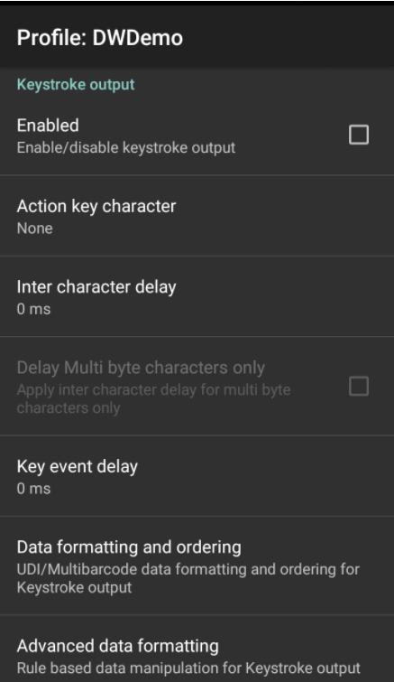

概述
按键输出收集已处理的数据，并将其作为一系列按键发送到关联的应用程序，从而仿真用户在设备上按键的操作。DataWedge 支持 TAB、ENTER 键和其他特殊字符，应用程序可能需要这些字符才能提交获取的数据供进一步处理，或由于其他原因将光标前进到另一输入字段。通过使用“操作”键字符（如下所示）并在基本数据格式或高级数据格式处理函数中将特殊字符添加到已获取的数据。
可使用设置配置 API 配置此功能的参数。
输出原始数据
除了其正常的纯文本和十六进制模式，DataWedge 还可在应用任何编码器之前以其原始表单形式输出已获取数据。这在需要自定义编码器获取 Zebra 不支持的字符集时非常有用。
使用 com.symbol.datawedge.decode_data Intent 额外项将原始数据接收为字节流。有关更多信息，请参阅 Intent 输出指南。
无法将原始数据输出为按键。
按键输出设置
要启用配置文件的按键输出，请选中复选框：  按键输出选项
操作键字符 - 启用嵌入条码或 MSR 数据的特殊字符注入。可能的值：
- 无 - 注入无操作键
- 制表符 - 在 ASCII Tab (0x09) 字符位置注入操作键
- 换行符 - 在 ASCII LF (0x0A) 字符位置注入操作键
- 回车符 - 在 ASCII CR (0x0D) 字符位置注入操作键
字符间延迟 - 用于设置将每个字符交付到应用程序之后的延迟（以毫秒为单位）。此参数旨在帮助避免因调度数据过快而导致应用程序不能接受的问题。默认=0。如果在按键交付中遇到错误，请以 100为增量增加此值（最大增加到 1000），直到错误停止。注意：此参数可能会对应用程序的性能产生负面影响。
多字节字符延迟 - 仅将字符间延迟（如上所述）应用于多字节字符。此参数旨在帮助避免在将 Unicode 和多字节字符发送到 Android 浏览器时出现问题。仅当启用字符间延迟时才可用。默认情况下禁用。
键事件延迟 - 用于设置将控制字符作为按键调度到前台应用程序的延迟（以毫秒为单位）。
配置文件导入行为
对于从之前版本中导入到 DataWedge 6.7（及更高版本）的配置文件，将为“多字节字符延迟”指定的值应用到字符间延迟，并启用“仅延迟多字节字符”参数。
对于使用 DataWedge 6.7（及更高版本）创建并导入到以前版本的配置文件，仅将指定的延迟（如有）应用到多字节字符。
UDI 数据输出
此设置适用于在条码读取器参数中将扫描模式设置为 UDI 的情况，如在上述参考部分选定通用设备标识符参数中指定的一样，此操作将获取多个数据点（令牌）。

令牌选择 - 允许调整已获取 UDI 数据的输出顺序，并可选择在令牌之间插入“制表符”、“换行符”或“回车符”字符（如果需要）。
要调整 UDI 令牌设置：
1.轻触“发送令牌”选择已获取 UDI 数据的所需输出。
仅令牌 - DataWedge 将 UDI 数据解析为单独令牌的进行输出（如果选择，则以分隔符字符进行分隔）。
条码和令牌 - DataWedge 发送由标记化数据附加的条码字符串。如果未选择分隔符字符（请参阅步骤 2），则 DataWedge 发送相同数据的两个实例。
2.如果需要，在令牌屏幕中轻触“令牌分隔符”以在令牌之间指定要插入的分隔符字符。如果选择“条码和令牌”模式，则还在两者之间插入选择的字符。 如果禁用“发送令牌”，则此设置不可用。
如果禁用“发送令牌”，则此设置不可用。
3.轻触“令牌顺序”以在输出中包括/排除令牌，并调整其输出顺序。 拖动令牌以调整输出顺序。
拖动令牌以调整输出顺序。
多条码数据输出
此设置适用于在条码读取器参数中将扫描模式设置为“多条码”，此操作可同时获取在相应读取器参数中指定的条码数量 (2-10)。
注意：仅 TC20/TC25 设备上的内部成像器支持。
要配置多条码输出：
1.轻触“数据格式化和排序”以指定要在每一条码的数据之间插入的分隔符字符。
2.轻触“条码分隔符”以指定所需插入字符（CR、LF 或 TAB）。
否则，每个条码中的数据作为按键的单一字符串进行级联和递送。
十六进制数据输出
在从原始形式转换为选定字符集之后，十六进制数据基于从扫描器框架接收到的已编码数据。选择十六进制输出选项时，将纯文本字符串转换为相应的十六进制数字，并作为字符串进行输出。该十六进制数据可通过编程方式获取。
以下 Java 命令将返回存储在按键或 Intent 输出字符串中的十六进制数据：
String hex = Hex.encodeHex(data.getString(DATA_STRING_TAG).toCharArray(), false);
要了解更多信息和使用 DataWedge UI 启用十六进制输出，请参阅基本数据格式 (BDF)。
其他 DataWedge 输出选项：
相关指南：